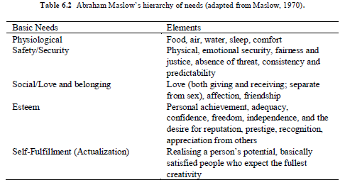
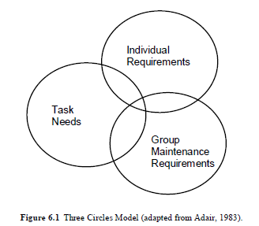
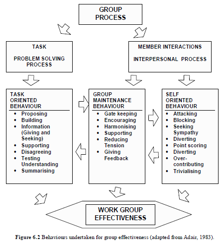
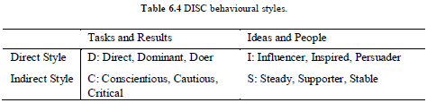
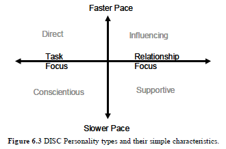
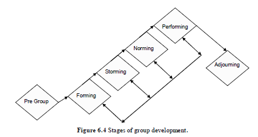
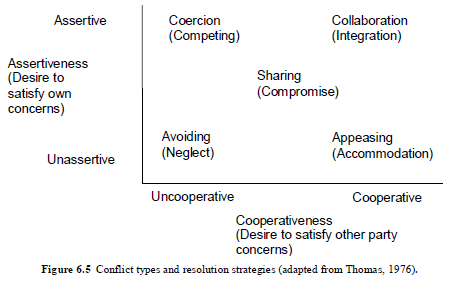

Teamwork involves the full effective use of the skills of all individuals. Skills that are required in managing day-to-day activities and provide the basis for undertaking many basic engineering activities such as planning, design and construction are also described. Managing conflict, time management and effective communication are skills for successfully undertaking an engineering project.
See Quizzes on Black Board.
All engineers require some management expertise to undertake engineering work. The planning, design and construction of projects, the innovative design of engineering systems, practical problem solving, managing operations of large engineering water and energy utilities and decision-making at all levels of an organisation require the management of the needs of a large number of individuals. Many engineers will work as project managers where the role is to manage people and resources committed to a project to ensure that it is completed on time and within budget. The needs of each individual in a project group affect the operation of the group, so much so, that the needs and tasks of both the individual and the group need to be considered together.
Maslow (1970) developed his Hierarchy of Needs, shown in the table below, upon which many management researchers based their work. Maslow and researchers who followed developed models of the reasons for an individual’s work behaviour. Note that these are only models and, in reality, human beings are very complex creatures who have many different aspirations that drive them. Maslow’s theory suggests that, as a person satisfies one level of need, then behaviour is motivated to meet the next level of need. This theory has been built upon to explain people and organizational needs of today with various alternative variations of the five levels evolving.
A group is a term which is vague in concept and can be any number of individuals who interact together. A team may be a group of people who work well together to achieve a common goal. Effective teams must have members who are willing and able to complete the task set, as well as work in a team environment. The size of effective teams has always been somewhat subjective because large tasks need large teams, but generally teams should be small enough to maintain efficient communication and coordination among the team members. Larger groups will always break into smaller informal groups to allow effective contributions from all members.
The three circles model of Adair (1983), shown in the figure below, illustrates the three areas of needs in any group or team. Adair does not take credit for the model and its origin is unknown. It has been proposed (Johnson and Johnson, 2000) that one of the keys to human development has been the ability to form and work in small effective groups. Groups are central to much of human life and engineering is no exception.
Effective groups are a force to be reckoned with; however, not all groups are effective and this can lead to significant problems. According to Johnson and Johnson (2000), an effective group
At present the trend is for more group work rather than less. A Fortune 1000 survey in 1993 found that 91% of companies had implemented some form of team working (up from 70% in 1987), and in Australia in 1991, 47% of manufacturing companies had employees in teams (up from 8% in 1988). This means that engineers will not only work in groups and teams but in all likelihood take some form of leadership role in them as well, given that engineers are more likely to be in senior positions. For this reason it is important to know how teams work and, more importantly, to know what to do when they start to break down. The below figure shows some of the group activities undertaken in the problem solving processes and the interpersonal processes that involve group maintenance and self oriented behaviours.
Teams need a leader to succeed. An effort should be made to designate someone to play that role at or before the first meeting. Sometimes a person is appointed to the leadership role because of their place in the organisation. However, there is no need for that leader to be permanent and omnipotent. The leader needs to ensure that the task and maintenance functions of the three circles model are performed. The roles of the members within the group can be decided by natural aptitudes for different functional roles or different people can be assigned to take on functions akin to their particular styles. Belbin (1981) outlined eight roles that any member of a group prefers to operate in, as shown in Table 6.3. This was later extended to nine roles with a specialist type added.
The Coordinator/Chairperson takes the responsibility of keeping people on track, and pays attention to group processes. This person, with the help of the Team Worker/Supporter, ensures that all members participate and notices when someone is upset. However, it is apparent that when both a Shaper and a Coordinator work in a team, one of them has to adopt a secondary preferred role.
The Resource Investigator can also act as a person who serves as liaison between the team and the rest of the world. In the context of groups at university, this person interacts with the academic supervisor and other groups. We all learn from others but mostly from our own experience. It can be said that someone with a modest amount of natural ability, who works hard at observing the member interactions of group maintenance and self oriented behaviours, as well as the task and problem solving process, will forge ahead of a person of high natural ability who relies on instincts and never addresses his or her faults. To understand the principles of leadership and to work hard at them will ensure success. As Adair (1983) stated: “Good leadership is often so silent, so self-effacing, that you are hardly aware of it, but bad leadership always shouts at you.”
A leader needs vision, discipline and wisdom (Newman, 1994). Vision shows that the leader knows what the long-term goal is and discipline is used to ensure that energy, time and resources are directed to achieve the goal. Wisdom can be considered to be the ability to apply knowledge and experience to any situation.
The leader also shows courage when different situations demand it. How does one create courage? The answer is as Mark Twain said: “Courage is a resistance to fear, mastery of fear—not absence of fear.” To make some difficult decisions requires courage and this decision-making ability is an attribute that is needed by a leader. The leader empowers others to make decisions, as the team depends on all members contributing to the process of achieving the designated goal.
Friendships and humility are developed throughout one’s career. Being a good listener and trusted confidante helps in mentoring the team, in avoiding rivalry and in producing the best outcomes. In each person's career there are times when it is necessary to have someone to open up to and ideally that person is the leader. No one survives alone. In developing such relationships a leader must exercise tact and diplomacy, and show impartiality. The leader must be prepared to learn from those within the team and those outside the team to produce the best outcome. Ideally a leader will exude inspirational power and enthusiasm and encourage team members to do their best. A leader’s role is to serve the team so that the team will be able to say, “We did this ourselves”.
There are many possible ways of classifying individual personalities. One way is according to the kinds of tasks that the person likes to take on: (leader, innovator, or keeper of the peace among many others). A search in the literature and the Internet can yield many free tests to discover what preferences of behavioural style an individual has. It is important to note here that there is no ‘right’ personality. The main task is to recognize the differences among team members and to work with the team members, rather than have them work against the team.
DISC follows a theory developed by Dr W.M. Marston in 1928 and further developed in the 1940s (Cole and Tuzinski, 2003). This theory suggests that a person’s preferred behavioural style falls into one of four categories. Although all four styles will usually be displayed by a single person, one style tends to describe the person's behaviour better than the others. DISC does not measure skills, experience, values, intelligence, beliefs or knowledge. DISC behavioural styles are shown below.
The four styles are determined from whether behaviour is direct or indirect and whether behaviour is oriented towards tasks and results, or people and ideas. All styles are necessary and valuable. The descriptors help us to clarify differences in people and remove barriers to improve communication. By determining whether another person is direct or indirect, task-oriented or people-oriented, one can develop a better relationship and better communication with that person. Tests that can be used to assess behavioural style can be found on the Internet so that an allocation to one of Direct (Eagle), Influencing (Parrot), Supportive (Dove) and Conscientious (Owl) can be made.
Some people are direct and work quickly, take risks, are forceful, talkative and tend to make decisions quickly. The Dominant Director and Influencing Persuasive types fit into the category of direct styles, as shown in the figure below. The indirect styles are quieter, patient, cooperative, more cautious and easy-going. Figure 6.3 DISC Personality types and their simple characteristics. They are good listeners and tend to take their time in making decisions and take fewer risks. Examples of indirect types include the Supporter and Conscientious styles.
People who are relationship-oriented are generally open, appreciative and supportive, and find it easy to make friends. These people can be enthusiastic and can share their feelings. They tend to go with the flow in a relaxed manner. The Steady Supporter (S) and Influencing (I) styles stress people and ideas. They tend to promote harmony. The other types of people seem to be biased to task and results. This type likes structure, procedures, guidelines and facts. They prefer to get to the point and do not like their time wasted. They usually take a considerable time to show their warm side and tend to keep their feelings to themselves.
Note that no one operates entirely in one quadrant and we all tend to have a mixture of all the styles in different percentages. Each style has weaknesses and it is important to be aware of our own weaknesses so that we can improve in those areas. One style will be the dominant style of an individual, although in different situations other styles may well be used. Is the dominant style Direct or Indirect? Is there a preference for tasks and results, or people and ideas? Are people who have similar or different characteristics easier to get along with? Why?
The eagle personality is decisive and strong willed. Eagles are keen to get to the point and quickly. They are adventurous, take risks and are forceful. At work eagles are results orientated, but to be easier to work with, eagles should do more listening and improve their consideration of others. In various other typologies, this personality has been labelled as a Bear, Lion, Guardian and Controller.
The parrot is enthusiastic and likes to express emotions. Parrots are talkative, optimistic and confident. In groups they are persuasive and gregarious. Parrots need to pay more attention to detail and improve their follow-through on tasks. In various other typologies, this personality has been labelled as a Monkey, Otter, Artisan and Promoter.
The dove is dependable, diplomatic, patient and a team player. Doves like to get results, are stable, good listeners and are sincere and patient. However, they could work at coping with change and improve their decision-making ability. In various other typologies, this personality has been labelled as a Dolphin, Golden Retriever, Philosopher and Supporter.
The owl personality is orderly, cautious and reserved. Owls have high standards, are careful, analytical, diplomatic and accurate. They could, however, open up more and attempt to move out of their comfort zone if they are to make more impact on their team. In various other typologies, this personality has been labelled as a Beaver, Scientist and Analyst.
When teams come together to undertake a specific task, it has been found that they tend to go through a series of quite well-defined stages. In 1965, Tuckman developed a model that had four stages of forming, norming, storming and performing. Some stages are very productive, some less so. It is important to realise that this is standard behaviour and that, if one is part of a group, these are the different stages that should be expected to happen and need to be worked through. Two extra stages of pre-group and adjourning can be added, as shown in the figure and described below.
At this stage the task is usually broadly defined, the group is undefined, the resources are undefined and there might appear to be little that anyone can do. However, there is. Members can decide on commitment at this early stage, and show it by, for example, arriving on time, or behaving in a way that demonstrates their willingness to be part of the group.
As the groups are formed, inclusion or exclusion is of paramount importance as members try to work out their place in the group. There may be superficial conversation and people orientate to each other and the task. It is suggested that even at this early stage there will be a search for direction and people will be looking for someone to provide strong leadership. The culture of the group is established during this stage. When teams are beginning, each member considers his or her identity within the group. Identity can be considered to be a combination of personality, behaviour, competencies, and position in the social structure of the group (Borgatti, 2002). Certain members will fight for dominance, others will like to be seen as being smart, others will play a comedian role, and some just want to be liked. Knowing Belbin’s roles helps a team through this stage by allowing the preferred styles of individuals to be incorporated in planning roles for the group by the leader.
Once the initial nerves are overcome, it is time for people to be confident enough to cause trouble! There may be the first conflict with personal agendas revealed. The interactions between members may be quite uneven and there is the tendency to rebel against the leader. The interactions allow a pecking order to be established. It is important to resolve conflict, otherwise apathy can set in, and doubts may surface about the ability to cope with the task.
Following the early disruptions, there may emerge a sense of renewed hope. Members can become more tolerant of each other and cohesion increases, and harmony becomes important. The roles of the members are established and they can become less dependent on the leader, although the leader is still necessary.
The group then enters its most productive phase. Members ‘get on with the job’, although minor problems may still occur. The role of the leader has changed and he or she is now seen as a peer and resource person. The roles have all been determined and there is consolidation of the status hierarchy.
The final stage of the team is its disbandment. As things wind down, there is time to check that the goals have been achieved and to try and cope with the end of the group. Many will make plans for future meetings and there may even be some sadness. Most importantly, there will often be a level of excitement based on what was achieved.
As teams evolve, if new members join the group, there is a tendency to revert to an earlier stage of development. This can be seen in Figure 6.4 where a number of cycles are generally needed, especially if all members do not attend meetings or carry out the work allocated to them.
Managing the resources that are available is paramount for any engineer carrying out projects. The ability to facilitate meetings and to manage one’s own time are two skills that are part of being an efficient manager and leader.
To have effective meetings, it is important to set an agenda, start and finishing times, the location for the meeting and ensure the chairperson keeps control of the process and time schedule. One simple thing that helps a lot is having an agenda. Brainstorming sessions have their own format. Meetings should have a designated outcome but if the meeting is just for a one-way distribution of information, this can be done prior to the meeting and the agenda set for discussion. Some simple processes are
A Attendees assign a chairperson who should encourage active participation to have the best possible decision-making process. Remember the meeting is for the benefit of all attendees. Listen to other points of view and do not be afraid to offer your own opinions.
G Group dynamics are important to allow all members to have a say. Ensure quieter members contribute, as they often have excellent ideas. Be firm with dominators who talk all the time, not allowing others to contribute. Remember the goals of the meeting.
E Expected outcomes are achieved by explaining the purpose of the meeting, exploring ideas and allowing all members to contribute to the discussion. Each member should feel that a contribution is expected and will be valued.
N Note-taking for an accurate record of the meeting is essential. This is a skill to practise and apply in meetings. The more that one does note-taking, the more adept one becomes at it. Rotating the position of the official recorder of the meeting is important for all members to get experience.
D Designate an action against each item. Decide "who is doing what" by what date so that everyone is clear on what is required. Create an action list.
A Announce and advise what is on the designated Action list, by circulating the minutes of the meeting as soon after the meeting is completed and set the next agenda, including time and place! The first item on any agenda should be a “status check,” which is where the facilitator asks each person how things are going and whether actions have been undertaken and, more importantly, whether there is anything that needs to be discussed.
Too much conflict may be a bad thing, but some is considered good because it may lead to more ideas being considered. The important issue in conflict is to ensure it is controlled and does not get out of hand. Correct decisions need to be taken if a wrong engineering decision will lead to a bad outcome, even if this is bad for team morale. This is not as easy as it sounds because there are many sources of conflict, many different situations in which it occurs and therefore many different ways of handling it. The five ways of handling conflict shown in the figure below depend on the behaviour and attitude of the person causing the conflict, and the managerial style of the person attempting to resolve it. These will now be discussed in a little more detail.
With coercion the leader essentially imposes his or her will on the person who has caused the conflict. It is a power-orientated approach and is useful if quick action is needed, or for unpopular decisions. While it works well in these situations, it may cause problems later because, although quashed at the moment, the conflict may not be resolved and the losers may become angry because there is competition for their own concerns. At this point, a negotiated resolution becomes less likely.
In accommodation, an unassertive leader works with a cooperative team member. Both neglect their own needs to suit others (to a certain extent). It is a useful conflict strategy if a team needs to preserve harmony, or when one of the two realises he or she is wrong. It has the advantage in that it allows others to learn by their mistakes, and is useful in building credit for later. On the down side, because they have given way, the feeling of self-worth may be diminished, and winners may press for further domination.
Conflict from an uncooperative team member can also be handled by avoiding the issues altogether. Avoidance does not address the conflict directly but sidesteps and attempts to postpone any resolution. As a strategy, avoidance is useful when the issue is trivial, or the leader’s power is low. It may also be applicable when the potential damage is greater than the benefits of resolution, or if there is a need to allow people to cool off. On the other hand, it generally gives low satisfaction and may even increase the opponent’s frustration.
Compromise seeks a mutually acceptable solution to the problem, or at least a temporary solution. It can be used where two opponents have equal power, or to achieve a temporary settlement in complex matters, or when goals are only moderately important. The main disadvantages with it are that the conflict is thought likely to re-emerge, and both sides may be dissatisfied with the outcome.
If there is time, working together using successful negotiating behaviours can bring an excellent result to conflict. Collaboration can be used to find a solution when both parties’ concerns are too important to ignore, to maximise commitment, and when it is important to learn from others. It can, however, take time and energy to work through it.